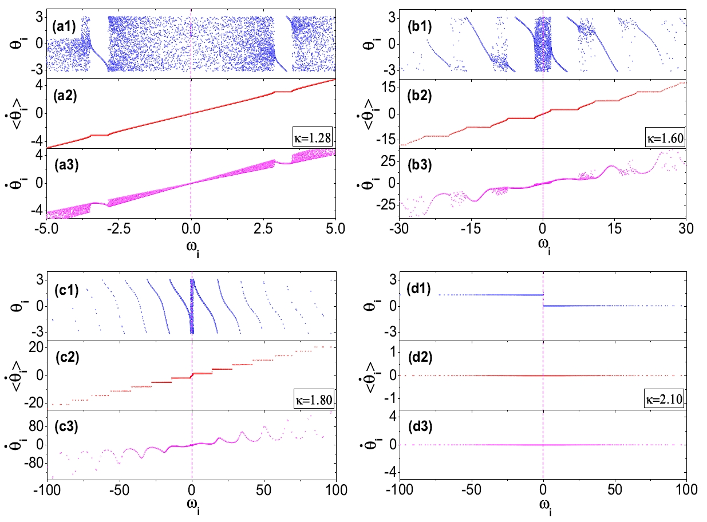

Subjects
Subjects 1
Progress...
Subjects 2: Coherent Dynamics in Balanced Spiking Networks
1. Dynamic excitatory-inhibitory (E-I) balance is a paradigmatic mechanism invoked to explain the irregular low firing activity observed in the cortex. However, we will show that the E-I balance can be at the origin of other regimes observable in the brain. The analysis is performed by combining extensive simulations of sparse E-I networks composed of N spiking neurons with analytical investigations of low dimensional neural mass models. The bifurcation diagrams, derived for the neural mass model, allow us to classify the possible asynchronous and coherent behaviors emerging in balanced E-I networks with structural heterogeneity for any finite in-degree K. Analytic mean-field (MF) results show that both supra and sub-threshold balanced asynchronous regimes are observable in our system in the limit N >> K >> 1. Due to the heterogeneity, the asynchronous states are characterized at the microscopic level by the splitting of the neurons in to three groups: silent, fluctuation, and mean driven. These features are consistent with experimental observations reported for heterogeneous neural circuits. The coherent rhythms observed in our system can range from periodic and quasi-periodic collective oscillations (COs) to coherent chaos. These rhythms are characterized by regular or irregular temporal fluctuations joined to spatial coherence somehow similar to coherent fluctuations observed in the cortex over multiple spatial scales. The COs can emerge due to two different mechanisms. A first mechanism analogous to the pyramidal-interneuron gamma (PING), usually invoked for the emergence of γ-oscillations. The second mechanism is intimately related to the presence of current fluctuations, which sustain COs characterized by an essentially simultaneous bursting of the two populations. We observe period-doubling cascades involving the PING-like COs finally leading to the appearance of coherent chaos. Fluctuation driven COs are usually observable in our system as quasi-periodic collective motions characterized by two incommensurate frequencies. However, for sufficiently strong current fluctuations these collective rhythms can lock. This represents a novel mechanism of frequency locking in neural populations promoted by intrinsic fluctuations. COs are observable for any finite in-degree K, however, their existence in the limit N >> K >> 1 appears as uncertain.
[Hongjie Bi, etl., Frontiers in Systems Neuroscience, 15 (2021)135.]
2. Oscillations are a hallmark of neural population activity in various brain regions with a spectrum covering a wide range of frequencies. Within this spectrum γ oscillations have received particular attention due to their ubiquitous nature and their correlation with higher brain functions. Recently, it has been reported that γ oscillations in the hippocampus of behaving rodents are segregated in two distinct frequency bands: slow and fast. These two γ rhythms correspond to different states of the network, but their origin has been not yet clarified. Here we show theoretically and numerically that a single inhibitory population can give rise to coexisting slow and fast γ rhythms corresponding to collective oscillations of a balanced spiking network. The slow and fast γ rhythms are generated via two different mechanisms: the fast one being driven by the coordinated tonic neural firing and the slow one by endogenous fluctuations due to irregular neural activity. We show that almost instantaneous stimulations can switch the collective γ oscillations from slow to fast and vice versa. Furthermore, to draw a connection with the experimental observations, we consider the modulation of the γ rhythms induced by a slower (θ) rhythm driving the network dynamics. In this context, depending on the strength of the forcing and the noise amplitude, we observe phase-amplitude and phase-phase coupling between the fast and slow γ oscillations and the θ forcing. Phase-phase coupling reveals on average different θ-phase preferences for the two coexisting γ rhythms joined to a wide cycle-to-cycle variability.
[Hongjie Bi, etl., Phys. Rev. Research, 2 (2020)013042.]
Subjects 3: Bellerophon States
 1. We report on a novel collective state, occurring in globally coupled nonidentical oscillators in the proximity of the point where the transition from the system’s incoherent to coherent phase converts from explosive to continuous. In such a state, the oscillators form quantized clusters, where neither their phases nor their instantaneous frequencies are locked. The oscillators’ instantaneous speeds are different within the clusters, but they form a characteristic cusped pattern and, more importantly, they behave periodically in time so that their average values are the same. Given its intrinsic specular nature with respect to the recently introduced Chimera states, the phase is termed the Bellerophon state. We provide an analytical and numerical description of Bellerophon states, and furnish practical hints on how to seek them in a variety of experimental and natural systems.
[Hongjie Bi, etl., Phys. Rev. Lett, 117 (2016)204101.]